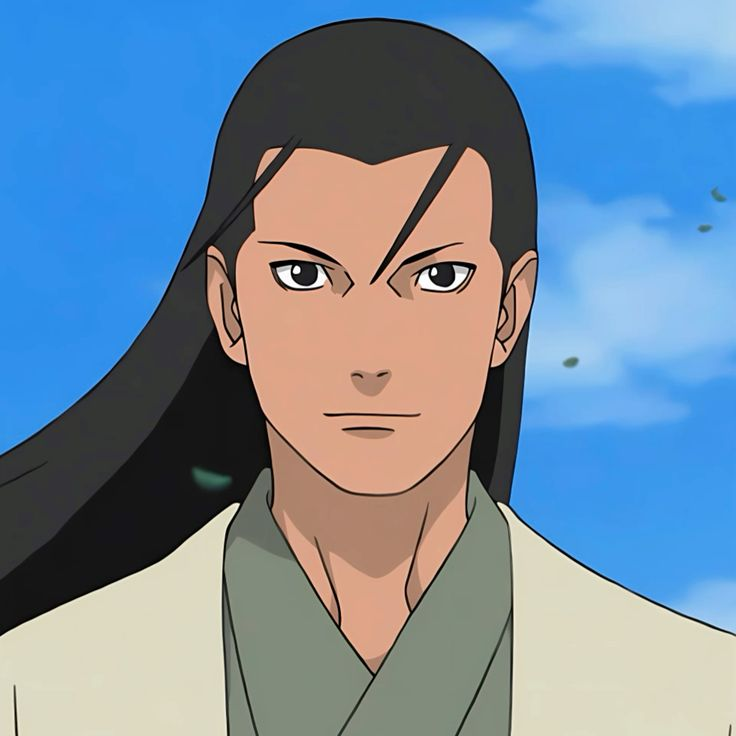
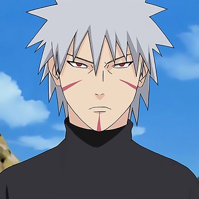
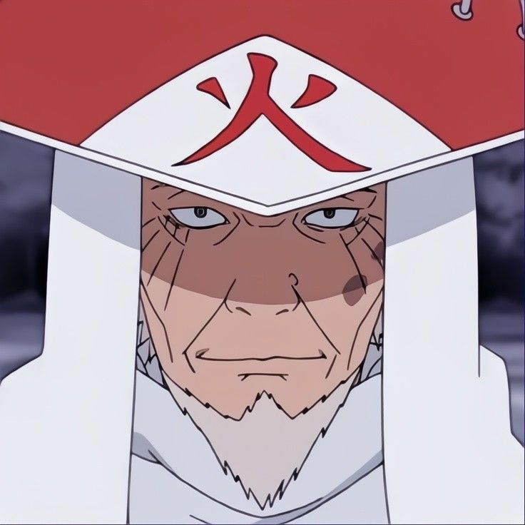
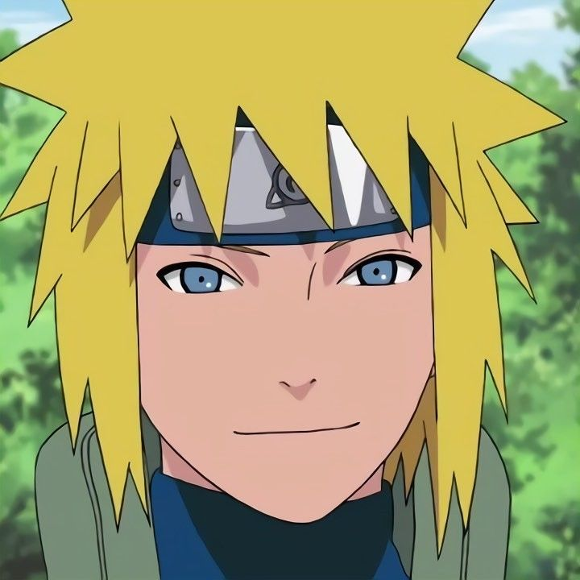
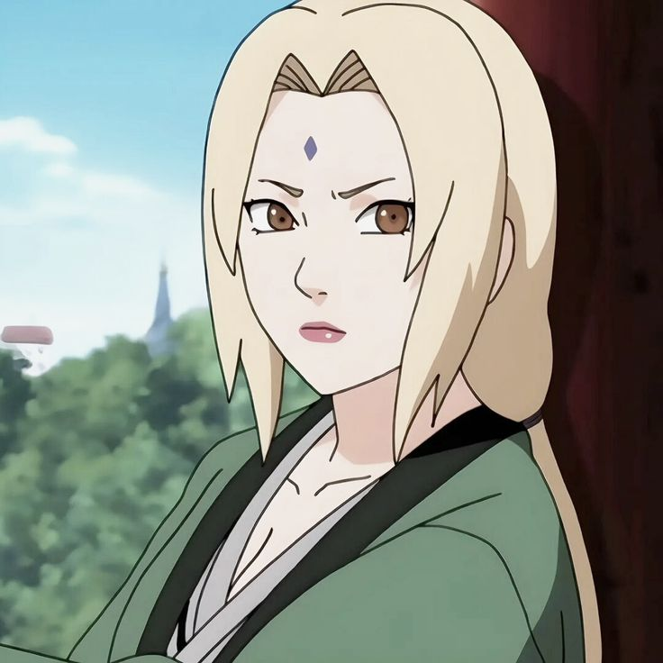
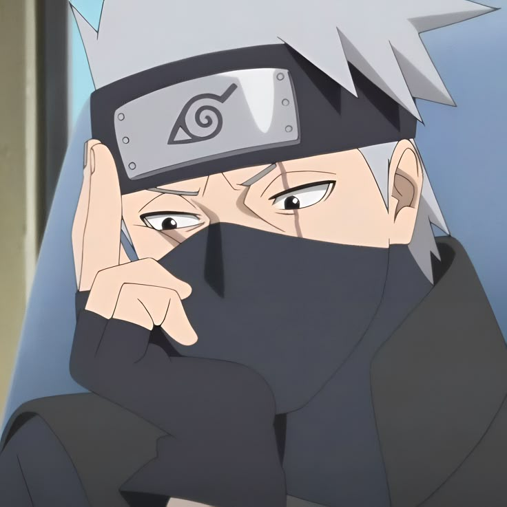
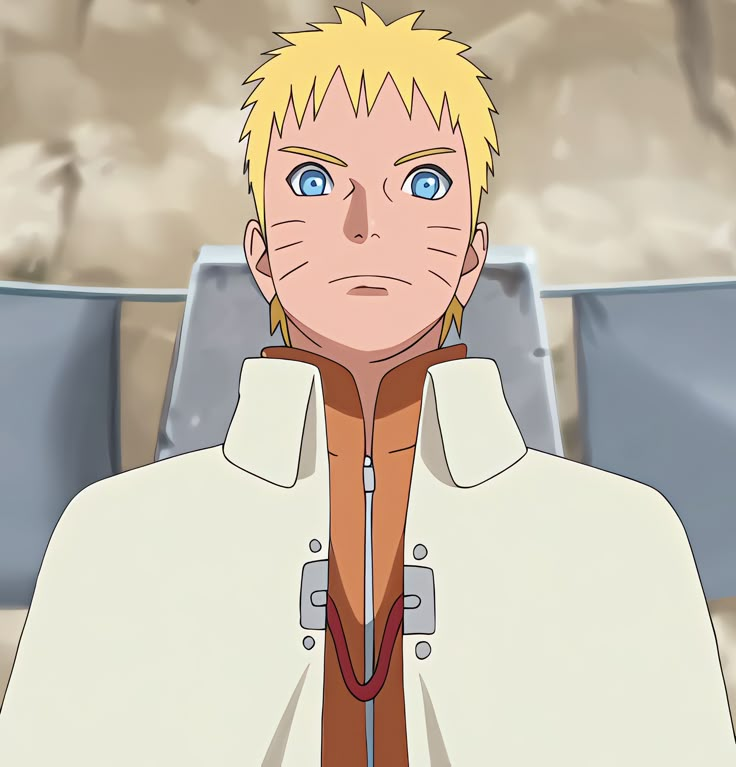

Naruto
Los Hokage de Konoha
Los Hokage son los lideres de la Aldea Oculta de la Hoja en Naruto. Se consideran los ninjas mas fuertes, influyentes y respetados de su epoca, pero su importancia no se limita a la fuerza: cada uno marca una forma distinta de proteger Konoha, organizarla y sostenerla en tiempos de guerra o crisis.
Volver a NarutoGuia general
Los lideres que construyen la historia de Konoha
El titulo de Hokage no significa solo ser el mas fuerte. Tambien implica tomar decisiones politicas, proteger a la aldea, cargar con sacrificios imposibles y convertirse en simbolo de estabilidad para varias generaciones de shinobi. Por eso los Hokage mezclan poder militar, prestigio moral y peso historico.
Desde Hashirama y Tobirama, que ponen en pie la estructura de Konoha, hasta Naruto, que encarna la superacion y la reconciliacion final, el cargo sirve para recorrer toda la evolucion de la aldea.
- Cada Hokage representa una forma distinta de liderazgo y una respuesta diferente a la guerra.
- Algunos destacan por su fuerza brutal y otros por su inteligencia politica o tecnica.
- El legado del cargo conecta directamente pasado, presente y futuro de Konoha.
Los siete Hokage

1º Hokage - Hashirama Senju
El fundadorDe que va: fundo Konoha junto a Madara Uchiha y busco la paz entre clanes en una era dominada por la guerra.
Poderes: Mokuton, chakra enorme y Modo Sabio.
Legado: su fuerza era tan absurda que rivalizaba directamente con Madara y se convirtio en el gran idealista de la aldea.

2º Hokage - Tobirama Senju
El arquitecto del sistemaDe que va: hermano de Hashirama y gran organizador de la aldea desde una vision mucho mas dura y practica.
Poderes: Suiton, tecnicas de teletransporte y creacion del Edo Tensei.
Legado: sento gran parte del sistema ninja moderno de Konoha, aunque sus decisiones tambien dejaron tensiones historicas.

3º Hokage - Hiruzen Sarutobi
El ProfesorDe que va: conocido como El Profesor, guio la aldea durante una de sus etapas mas largas y complejas.
Poderes: dominio de los jutsus de Konoha e invocacion del Rey Mono Enma.
Legado: fue maestro de los Sannin y una figura casi paternal para varias generaciones, aunque su mandato tambien arrastra errores muy serios.

4º Hokage - Minato Namikaze
El Relampago AmarilloDe que va: padre de Naruto Uzumaki y uno de los ninjas mas veloces y brillantes de toda la historia.
Poderes: Hiraishin, Rasengan y tecnicas de sellado de altisimo nivel.
Legado: sello a Kurama dentro de Naruto y se convirtio en un simbolo de sacrificio absoluto por la aldea.

5º Hokage - Tsunade
La sanadora legendariaDe que va: nieta de Hashirama y una de los Sannin legendarios, vuelve para sostener Konoha tras una etapa muy dura.
Poderes: fuerza fisica monstruosa, jutsus medicos y regeneracion extrema.
Legado: estabiliza la aldea, reforma el peso de la medicina ninja y sostiene a Konoha ante amenazas gigantes.

6º Hokage - Kakashi Hatake
El maestro del Equipo 7De que va: ex ANBU y maestro del Equipo 7, asume el cargo en la etapa de reconstruccion posterior a la guerra.
Poderes: Sharingan temporalmente, Chidori y miles de jutsus copiados.
Legado: demuestra que podia ser Hokage incluso sin el Sharingan y sirve como puente entre la guerra y la era de Naruto.

7º Hokage - Naruto Uzumaki
El sueno cumplidoDe que va: nino rechazado que sonaba con ser Hokage y termina convirtiendose en el ninja mas fuerte y admirado de su generacion.
Poderes: Kurama, Modo Sabio de los Seis Caminos y variantes avanzadas del Rasengan.
Legado: su ascenso cierra uno de los arcos emocionales mas fuertes de toda la serie: pasar de ser marginado a protector maximo de Konoha.
Grandes etapas del cargo
Etapa 1
Fundacion y estructura de la aldea
Los dos primeros Hokage levantan Konoha como proyecto politico y militar. Hashirama pone la vision de paz y union; Tobirama la convierte en instituciones, organizacion y sistema shinobi real.
- Hashirama aporta el ideal y la fuerza fundacional.
- Tobirama ordena la aldea y crea tecnicas y estructuras duraderas.
- La base de Konoha nace del equilibrio entre idealismo y pragmatismo.
Etapa 2
Guerra, sacrificio y supervivencia
El liderazgo pasa por generaciones marcadas por guerras ninja, amenazas internas y decisiones tragicas. Hiruzen sostiene durante mucho tiempo el peso del cargo y Minato deja una huella inmensa en muy pocos anos.
- Hiruzen representa continuidad, sabiduria y tambien contradicciones.
- Minato simboliza talento puro y sacrificio definitivo por la aldea.
- La infancia de Naruto queda marcada por esta etapa.
Etapa 3
Reconstruccion y nueva era
Despues de grandes destrucciones, el cargo entra en una fase de reconstruccion y madurez. Tsunade estabiliza, Kakashi enlaza paz y reconstruccion, y Naruto encarna una aldea que por fin cambia su manera de entender el reconocimiento y la proteccion.
- Tsunade devuelve firmeza institucional y medica.
- Kakashi gobierna una etapa mas serena y de transicion.
- Naruto se convierte en el simbolo final del cambio generacional.
Por que el titulo de Hokage pesa tanto
- Fuerza. El Hokage suele ser uno de los ninjas mas poderosos de su era.
- Autoridad. Toma decisiones que afectan a toda la aldea y al equilibrio entre naciones.
- Simbolo. Representa proteccion, sacrificio y orgullo para Konoha.
- Legado. Cada mandato deja consecuencias politicas, tecnicas y emocionales.
Curiosidades de los Hokage
- Todos han sido extremadamente poderosos en su epoca, aunque cada uno brillara de forma distinta.
- Minato esta considerado uno de los mas rapidos de la historia, sobre todo gracias al Hiraishin.
- Hashirama era tan fuerte que rivalizaba con Madara Uchiha, algo reservado a muy pocos personajes.
- Naruto fue el Hokage mas joven, cerrando por fin el mayor sueno de toda su vida.
- Kakashi fue Hokage sin tener el Sharingan al final, lo que refuerza que su valor no dependia solo de ese poder.
- Tobirama creo tecnicas muy peligrosas, y varias de ellas seguirian influyendo en la historia durante anos.
- Tsunade es una de las figuras medicas mas importantes del mundo ninja, no solo una Hokage poderosa.